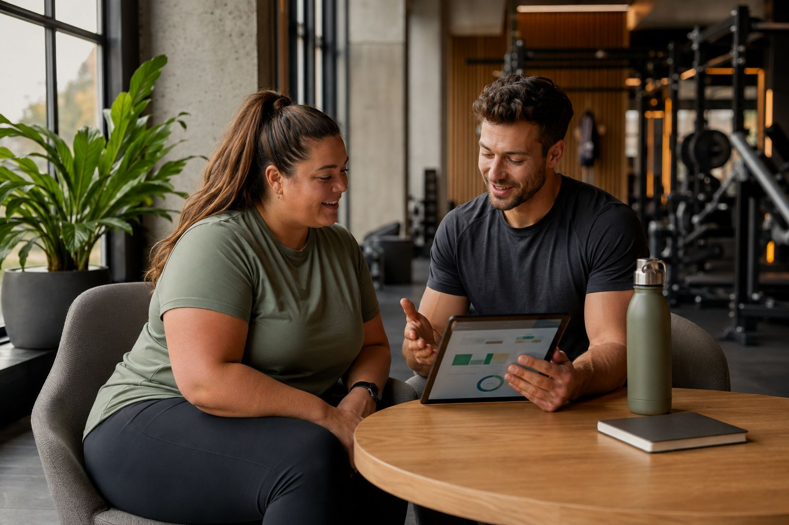
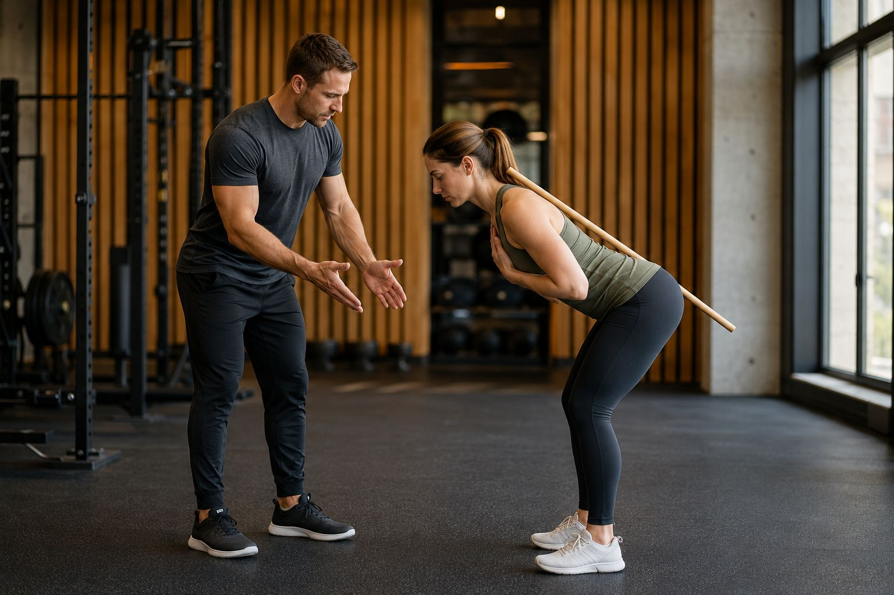
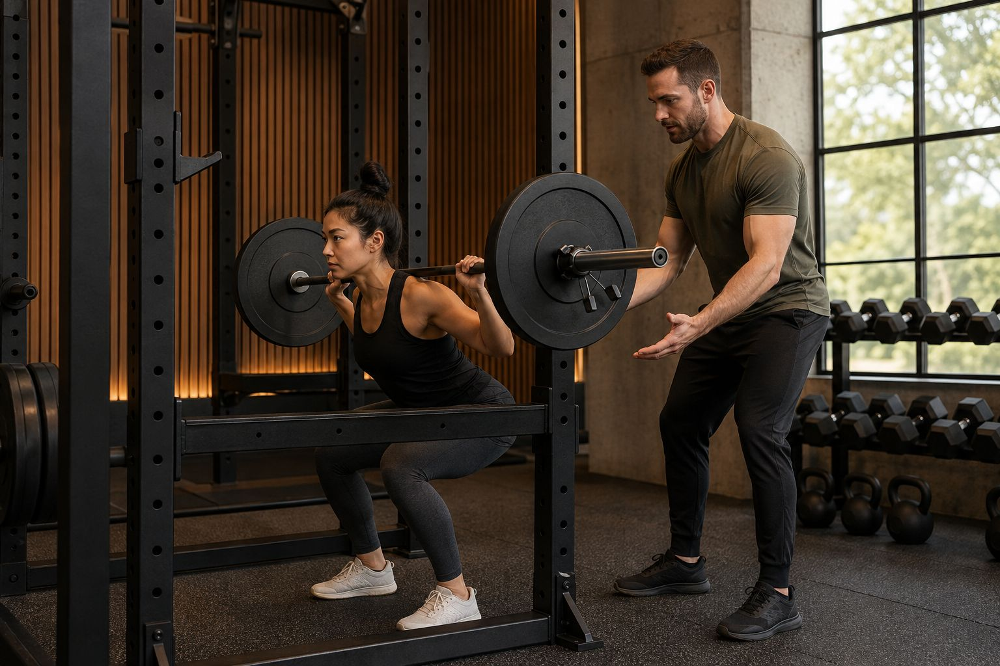
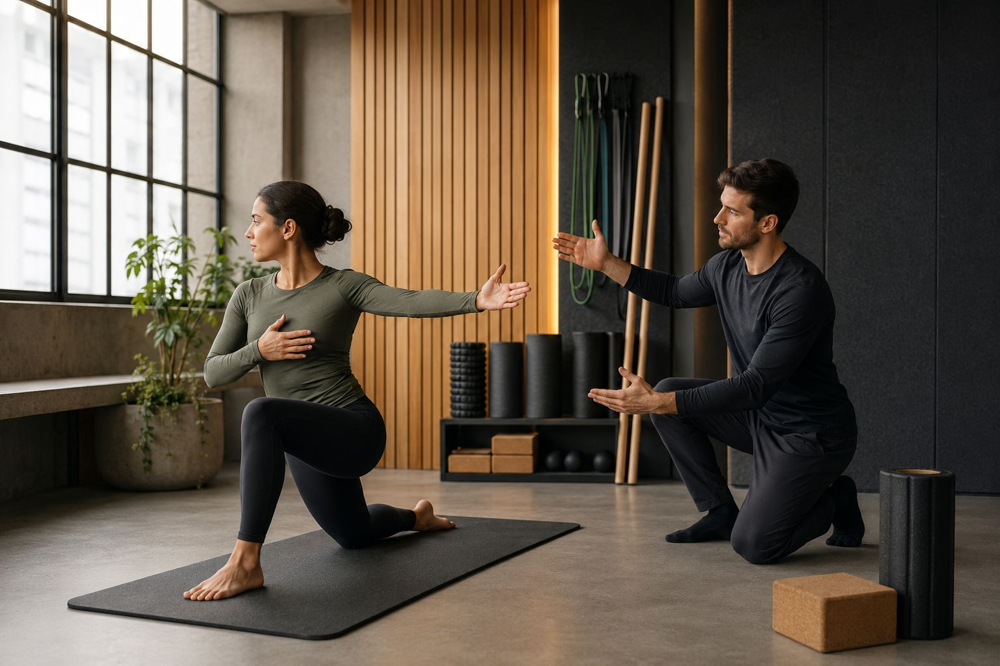
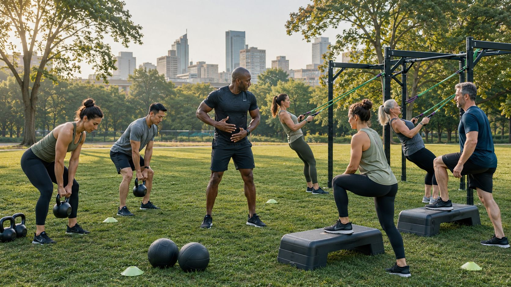
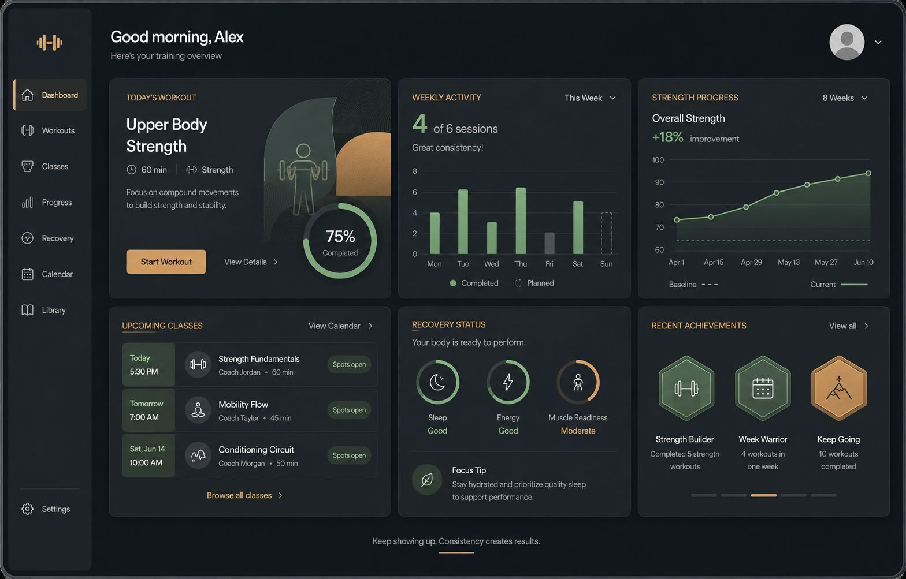

Structuur
Duidelijke trainingsweken met meetpunten die je helpen ritme op te bouwen.

Personal coaching
We combineren structuur, techniek en heldere opvolging in trajecten die passen bij werk, energie en trainingshistorie.
Werkwijze
Elk traject start met een scherp intakegesprek, gevolgd door een plan dat gericht is op consistentie en haalbare progressie. We sturen bij op basis van feedback, herstel en de realiteit van de week.
Zo blijft coaching praktisch, persoonlijk en gericht op duurzame trainingskwaliteit.

Coachingpijlers

Duidelijke trainingsweken met meetpunten die je helpen ritme op te bouwen.

Beweging, voorbereiding en herstel worden mee opgenomen in de planning.

Ook buiten de zaal houden we training scherp met afwisselende prikkels.

Met duidelijke data en korte check-ins blijft het traject transparant en bruikbaar.